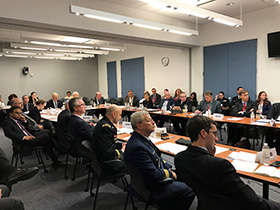

<div class="content-wrapper"><div><div><!-- react-empty: 170 --><div class="page-title breadcrumb-wrap banner banner-sm"><span class="background" style="background: url(&quot;/img/headers/b14.jpg&quot;) center center no-repeat;"></span><div class="container"><ol class="breadcrumb" style="margin-top: 15px;"><li><a href="http://localhost:1337/">Home</a></li><li><a href="http://localhost:1337/about">About</a></li><li class="current">What We Do</li></ol></div></div><div class="container"><div><div class="container"><div class="row"><div class="col-md-8"><div><!-- react-empty: 200 --><div class="article"><div>

<article data-tags="about us">
	<h1>What We Do</h1>
	<section>
                
		<p>The US Committee on the Marine Transportation System (CMTS) was chartered in July 2005 and authorized in December 2012 to serve as a Federal interagency coordinating committee with the following responsibilities:</p>
		<ul>
			<li>Assess the adequacy of the marine transportation system (MTS), including ports, waterways, channels, and intermodal connections</li>
			<li>Promote the integration of the MTS with other modes of transportation and uses of the marine environment</li>
			<li>Coordinate, improve coordination, and make recommendations with regard to Federal policies that impact the MTS</li>
		</ul>
		<p>By charter, the CMTS is chaired by the Secretary of Transportation. Much of the day-to-day policy coordination and work plan establishment are handled by the sub-Cabinet "Coordinating Board" of agency heads and key office directors, including the White House. Over 25 Federal agencies and offices are engaged in the Coordinating Board, and the membership is growing. In 2014, the Marine Mammals Commission and the National Maritime Intelligence Integration Office were added to the roster.</p>
		<p>The activities of the CMTS are guided by the 14 recommendations laid out in the 2017-2022 National Strategy for Marine Transportation System (system performance, safety, security, energy innovation, and infrastructure investment) and by emerging issues (resilience/big data/Arctic transportation/ veteran's hiring). The yearly approved work plan is implemented through integrated action teams and task teams, agency leadership, and staff support. When an issue does not fall neatly within the purview of a single agency's authority or when efficiencies can be gained by leveraging expertise from multiple agencies around a common goal, the CMTS can be a valuable tool for engagement.</p>
		<p>The marine transportation system is essential to the American economy; it supports millions of American jobs, facilitates trade, moves people and goods, and provides a safe, secure, cost-effective, and energy-efficient transportation alternative. The CMTS is working to ensure that the MTS continues to meet the present and future needs of our nation. This interagency collaboration has resulted in a safer, more secure, environmentally friendly, and efficient MTS.</p>
		<figure>
			
		</figure>
	</section>
	<section>
		<h2>Key Responsibilities</h2>
		<ul>
			<li>Improve Federal marine transportation system coordination and policies</li>
			<li>Develop outcome-based goals for the marine transportation system</li>
			<li>Integrate marine transportation with other modes and other ocean uses</li>
			<li>Recommended	<a href="http://localhost:1337/about/priorities_and_recommendations">strategies and plans</a> to maintain and improve the marine transportation system</li>
		</ul>
	</section>
</article>

</div></div></div></div><div class="col-md-3 col-md-offset-1"><div class="resources"><div><h4>See Also</h4><div class="links"><ul><li><a href="http://localhost:1337/about/priorities_and_recommendations" title="File: ../about/priorities_and_recommendations"><!-- react-text: 197 -->Strategies And Plans<!-- /react-text --></a></li></ul></div></div></div><span></span></div></div></div></div></div></div></div></div>
